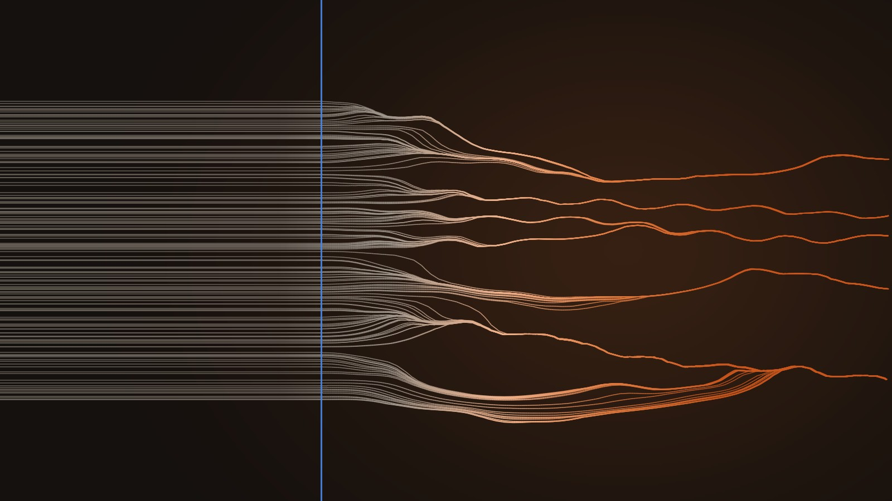
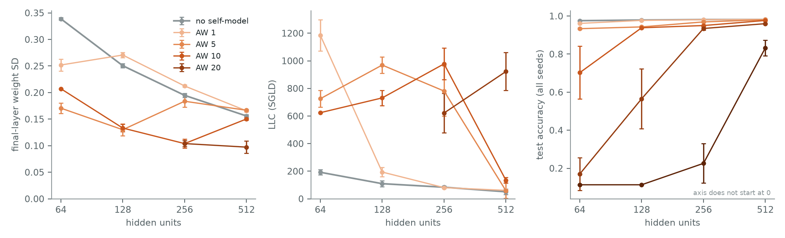
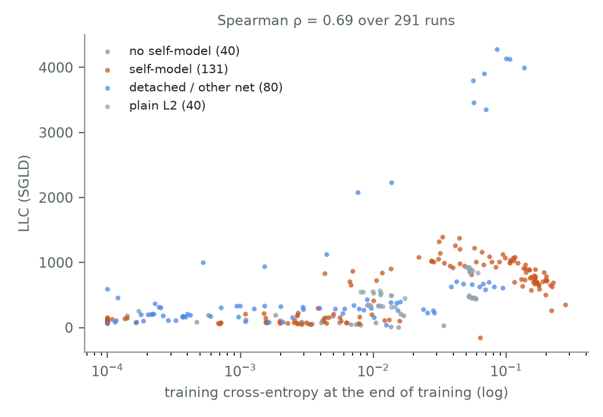
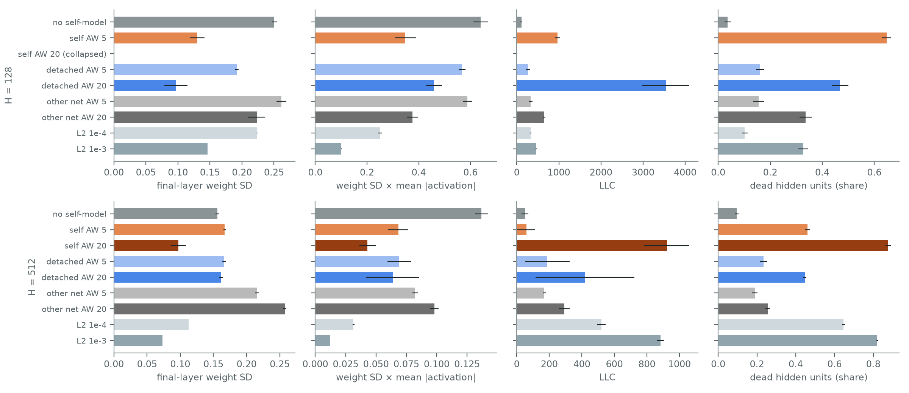
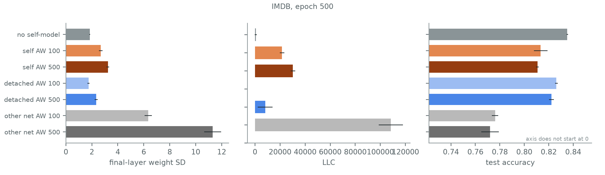
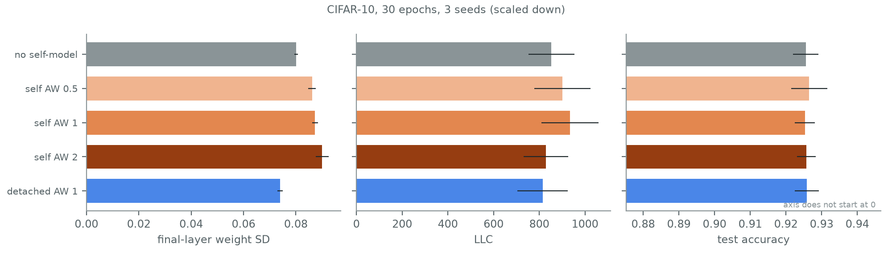

← Research·Experiments·
Does predicting itself make a network simpler? Self-modeling kills hidden units, and the complexity measure moves the other way
Replicates “Unexpected Benefits of Self-Modeling in Neural Systems”, the AI Alignment Foundation’s self-modeling result, with three controls it lacked. For anyone reading “self-modeling makes networks simpler” as a reason to build self-models into AI systems: on MNIST the effect is mostly hidden units switched off, and the learning coefficient the paper used rose, not fell.

experiments/shared/make_art.py.Summary: the short answer and the key results
In short
Does training a network to predict its own hidden activations make it simpler, as the self-modeling paper reports? Partly, and not the way it says. On MNIST, with the paper’s architectures, auxiliary weights and 50 epochs, the final-layer weights narrowed in 8 of the 13 cells that trained (7 more collapsed), and the narrowing came with hidden units switched off: 88% of units dead at the strongest working weight against 9% without the self-model. The paper’s second measure, the local learning coefficient (RLCT), rose in every cell instead of falling. But that measure also ranked a 64-unit net as more complex than a 512-unit one and rose under plain weight decay, so on these networks it tracks how loosely a model fits its training data, not how complex it is. On IMDB and CIFAR-10 the weights widened. Neither headline reproduces.
Key results
- Narrower final-layer weights in 8 of 13 measurable MNIST cells, not 20 of 20. Every auxiliary weight from 1 to 50 at 4 hidden sizes, 10 seeds each. 7 of the 20 cells could not be measured (6 collapsed in every seed, one in 9 of 10), and in 4 of the remaining 13 the weights widened (+0.010 to +0.020). The pre-registered bar was 16 of 20 (P1, missed).
- The learning coefficient rose with self-modeling in every cell. At 512 units it went from 51 to 922 at AW 20 (+872 [733, 1010]); no cell fell (P2, missed). The paper reported the opposite.
- The coefficient measures fit, not complexity, on these nets. Over 291 runs its rank correlation with the final training loss is 0.69. It is higher for 64 units than for 512 (192 against 51), and plain L2 weight decay raises it 10-fold (51 to 520 at 1e-4). It also kept rising with the sampler’s step size and never reached a plateau. This check was not pre-registered; it is why the miss above says little either way.
- The self-model switches hidden units off. At 512 units, the share of units that never fire on the test set goes from 9% (no self-model) to 46% (AW 5) and 88% (AW 20). A dead unit is trivially predictable: its activation is always zero. With the self-model’s target detached, so the net cannot reshape what it predicts, 45% die and at 512 units the weights do not narrow (+0.006 [0.002, 0.010] against −0.059 [−0.070, −0.047]); at 128 units the detached control narrows them too (0.097 against 0.251), so the “self” part is not always needed.
- Accuracy is not kept. At AW 5, 128 units lose 3.6 points (97.9% to 94.3%), and AW 50 collapses every size (11-83%). The paper reports breakdowns only for its two smallest nets.
- IMDB goes the other way. Final-layer weights widen from 1.84 to 2.69 (AW 100) and 3.23 (AW 500), while hidden activations shrink 4 to 5 times: the net moved scale from the hidden layer into the output layer. Accuracy fell 2.2-2.4 points; the paper reports a small gain.
- CIFAR-10, scaled down, also widens. After 30 epochs (3 seeds), the weights widened at every auxiliary weight (+0.006 to +0.010, intervals above zero), the LLC was level and accuracy unchanged (92.5-92.7%).
01Introduction
Ask a small network to classify a handwritten digit and, as a side job, to predict the 512 numbers its own hidden layer just produced. The cheapest way to make that side job easy is to make the hidden layer boring. Give it a strong enough push and that is what it does: at an auxiliary weight of 20, 88% of its 512 hidden units never fire on any test image, and an always-zero unit is perfectly predictable.
What is known. Unexpected Benefits of Self-Modeling in Neural Systems adds this side job, a self-model, to classifiers on MNIST, CIFAR-10 and IMDB. It reports that the networks “learn to make themselves simpler”: the final layer’s weights are narrower, and a theoretical complexity measure, the real log canonical threshold (RLCT), is lower, both falling further as the side job’s weight rises. The AI Alignment Foundation’s research page presents it as a route to models that are “easier to understand, easier to verify and more robust”.
What is missing. The paper released no code and compares each self-model only with a plain classifier. It does not test whether the effect needs the self part (any extra regression target might do the same), whether simpler weights come from units being switched off, or whether its RLCT estimate behaves like a complexity measure on these networks.
What this note does. It rebuilds the method from the paper’s description, reruns its MNIST grid in full and its IMDB and CIFAR-10 experiments, and adds three controls.
- A replication of the paper’s Figures 2 and 4 at its own settings (Figure 3 scaled down), with 95% intervals over 10 seeds.
- Three controls the paper lacked: a self-model whose target is detached, a regression onto another network’s hidden layer, and plain L2 weight decay.
- A check of the complexity ruler: known-answer tests of the RLCT estimator, its step-size dependence, and what it tracks across 291 runs.
- A mechanism: hidden units die under the self-model, at 512 units more than under either regression control.
Before any run, these were fixed as success tests (predictions, scored below): (1) final-layer weights narrower than the no-self-model baseline in at least 16 of the 20 MNIST cells, with the 95% interval below zero; (2) the RLCT lower in at least 16 of 20 and falling with the auxiliary weight; (3) accuracy within 1 point up to an auxiliary weight of 10. The replication counts as reproduced if (1) and (2) both hold.
02Setup
| Self-model | The output layer emits the class logits and a prediction â of the hidden activations a. Loss = cross-entropy + AW × mean((â − a)²), with gradient into both â and a, as the paper writes it. Before measuring, the self-model rows of the output layer are removed, so every arm is measured on the same architecture. |
|---|---|
| MNIST (Figure 2) | 784 → hidden (ReLU) → 10 + hidden outputs; hidden 64, 128, 256, 512; AW 0 (baseline), 1, 5, 10, 20, 50; 50 epochs; 10 seeds per cell. Faithful to the paper. Unreported details we fixed for every arm: Adam, learning rate 1e-3, batch 128, PyTorch’s default initialisation, inputs standardised. |
| IMDB (Figure 4) | Mean word embedding (10,000-word vocabulary, width 64) → linear hidden layer of 64 (no activation; the paper says “linear”) → 2 + 64 outputs; AW 0, 100, 500; 500 epochs; 10 seeds. Adam 1e-3, batch 256. |
| CIFAR-10 (Figure 3), scaled down | ResNet-18 (CIFAR stem) + a 256-unit linear hidden layer; self-model target = the hidden layer and its 512 inputs. AW 0, 0.5, 1, 2 and a detached control at 1. 30 epochs and 3 seeds, not the paper’s 150-250 epochs and 10 runs. |
| Width | The standard deviation of the final layer’s classification weights (bias excluded), the paper’s first measure. |
| RLCT | The local learning coefficient (LLC), the paper’s second measure, estimated by SGLD as in the method it cites (Lau et al.): sample weights near the trained ones at temperature 1/log n; LLC = n·β·(mean training loss of the samples − training loss at the trained weights). 4 chains × (300 burn-in + 700 draws), localisation 100, minibatch 512, on the classification loss. Our own implementation, checked first (below). |
| Controls | Detached target: the same loss with a treated as a constant, so the net cannot make itself easier to predict. Other network: predict the hidden layer of a frozen, randomly initialised net of the same shape. Plain L2: no side job, a weight penalty at 1e-4 and 1e-3. MNIST: 128 and 512 units, AW 5 and 20, 10 seeds each; IMDB: AW 100 and 500. |
Words used here. AW is the auxiliary (self-model) weight. A cell is one hidden size and AW, 10 seeds. A run collapsed when its MNIST test accuracy is below 90% (IMDB 60%); collapsed runs are counted and left out of width and LLC means, as the paper set its anomalous cells apart. A hidden unit is dead when it is zero on all 10,000 test images.
The ruler was checked first. On linear regression with 20 parameters, where the true LLC is 10, the estimator returns 10.4; with 10 of the 20 inputs always zero, where the dead parameters should add nothing, it returns about 5 (test_llc.py). At a larger step the same test read 15.5, because minibatch noise inflates the estimate, so the step size matters; it was chosen on a development seed that is not among the reported ones.
03How the study was run
- Plan: committed before any run, with five predictions, a kill rule on the LLC check and a $15 cap in code.
- LLC known-answer tests: 2 regressions, on the laptop.
- Step-size calibration: one baseline network per task (seed 100, not reported), 7 steps from 1e-6 to 1e-3.
- MNIST grid: 4 sizes × 6 AW × 10 seeds = 240 networks; controls: 120 more.
- IMDB: 70 networks (3 AW + 4 control arms × 10 seeds), measured at epochs 250 and 500.
- CIFAR-10: 15 networks (5 arms × 3 seeds) on one L4.
- Analysis: 95% t-intervals over seeds, Welch intervals for differences, predictions scored by script.
| Fixed before any run | Changed after reading results |
|---|---|
| Architectures, AW grids, epochs, seeds, optimiser, both measures, the three controls, the collapse cut, the predictions | The SGLD step grid was extended upward (amendment 1): no registered step reached a plateau. On CIFAR every MNIST step diverged, so a smaller grid was added (amendment 2). Both were set on runs that are not compared. |
| Step-size rule: the plateau | No task reached one; the largest stable step was used (MNIST 1e-4, IMDB 3e-4), as the amendment said to do in that case. |
| Budget: $15 | Spent: $7.45 (Modal CPU and one L4, estimates from wall time). |
Conditions: PyTorch 2.9 on Modal CPU containers (2 cores each, up to a few hundred at once) for MNIST and IMDB; one L4 for CIFAR-10. An MNIST network with its LLC takes 2-4 minutes, an IMDB one about 25, a CIFAR one about 12.
04Results
4.1 Final-layer weights narrowed in 8 of 13 measurable MNIST cells; 7 cells collapsed

| Hidden units | no self-model | AW 1 | AW 5 | AW 10 | AW 20 | AW 50 |
|---|---|---|---|---|---|---|
| 64 | 0.339 | 0.252 | 0.171 | 0.207 (1 seed) | collapsed | collapsed |
| 128 | 0.251 | 0.271 | 0.130 | 0.133 | collapsed | collapsed |
| 256 | 0.195 | 0.212 | 0.184 | 0.104 | 0.104 | collapsed |
| 512 | 0.156 | 0.166 | 0.167 | 0.150 | 0.097 | collapsed |
Table 1. Final-layer weight SD, mean over non-collapsed seeds. Every difference from the baseline has a Welch 95% interval in summary.json (mnist_diff).
The paper’s direction holds where the auxiliary weight is large enough to matter and small enough to train: 8 cells are narrower with the interval below zero (AW 5-20 at most sizes, and AW 1 at 64 units). AW 1 widens the weights at 128, 256 and 512 units, and AW 5 at 512 (+0.010 to +0.020, intervals above zero); at 256 units AW 5 is level. The paper’s Figure 2B shows every self-model below the baseline at every size; we do not see that.
Collapse is wider than the paper reports. It saw breakdowns at 64 and 128 units with AW 20 and 50. Here AW 50 collapsed every seed at every size (test accuracy 11-83%), AW 20 every seed at 64 and 128 units, and AW 10 nine of ten seeds at 64 units. Unreported details such as the optimiser could move this boundary; the paper gives none.
4.2 The learning coefficient rose with self-modeling in every cell
At 512 units the LLC went from 51 (baseline) to 61, 59, 135 and 922 at AW 1, 5, 10 and 20; at 128 units from 110 to 194, 969 and 731. No cell fell; two (512 units at AW 1 and 5) are level within their intervals. The paper reports the RLCT falling in every cell and falling further as AW rises. On our runs the Spearman correlation of the seed-mean LLC with AW is +0.2 to +0.9 at the four sizes, where the prediction asked for −0.8 or below. At one third of the step size every ordering is the same.
4.3 On these networks the learning coefficient tracks how well a model fits, not how complex it is

Three checks say the estimate is not measuring complexity here. First, it ranks the 64-unit baseline (192) above the 512-unit one (51); an effective parameter count should not fall as parameters are added. Second, plain L2 weight decay, the textbook way to make a network simpler, raises it: 51 → 520 → 883 at 512 units for penalties 0, 1e-4 and 1e-3. Third, it rises with the training loss across all 291 runs (Figure 2), whatever produced that loss, and every self-model arm that trains less tightly sits higher.
It also never settled. Across the step grid on the development network it read 0.5, 4.6, 21.8, 44.8 and 63.5 as the step rose from 1e-6 to 1e-4, and its chains disagreed beyond that, so there was no range where the answer stops depending on the setting. A localised SGLD estimate assumes the trained weights sit at a minimum of the loss being sampled. With the self-model rows removed they need not: the paper notes this itself and restricts the measure to the classification loss, but a network trained to share its capacity with a second task is not at a minimum of the first. The step and localisation the paper used are not reported, so we cannot say which of these its estimates escaped.
4.4 What the self-model does: it switches hidden units off

| 512 hidden units, AW 20 | Width | vs baseline | Dead units | Accuracy |
|---|---|---|---|---|
| No self-model | 0.156 | – | 9% | 98.2% |
| Self-model (the paper’s) | 0.097 | −0.059 [−0.070, −0.047] | 88% | 96.0% |
| Detached target | 0.162 | +0.006 [0.002, 0.010] | 45% | 98.0% |
| Other network’s hidden layer | 0.257 | +0.101 [0.098, 0.105] | 26% | 97.5% |
| Plain L2, 1e-3 (no side job) | 0.073 | −0.083 [−0.085, −0.080] | 82% | 97.7% |
Table 2. At 512 units the self part matters, but through unit death: only the arm that can change its own target narrows the weights, and it kills the most units. Detach the target and the weights do not narrow; regress onto another network and they widen. Plain L2 narrows them further than the self-model does, kills nearly as many units and costs less accuracy.
At 128 units the picture is less tidy (Figure 3, top). The detached control at AW 20 narrows the weights as much as anything (0.097 against 0.251) and kills 47% of units, while the self-model at AW 20 collapses. So the “self” route, where the net reshapes the very thing it predicts, is one way to get narrower weights, not the only one: any strong regression load on the output layer can do it at small sizes.
The dose curve says the same: at 512 units the dead share goes 9%, 24%, 46%, 68%, 88% as AW goes 0, 1, 5, 10, 20, and at 256 units it reaches 93% at AW 20. The paper reads simpler weights as the network “learning to make itself more predictable”. That is true in a narrow sense: a unit that never fires is the most predictable unit there is. It is not evidence of a richer or more efficient representation, and the width measure cannot tell the two apart.
One more caution about width: it is not scale-free. A ReLU network computes the same function if a hidden unit’s input weights are halved and its output weights doubled. The product of width and mean hidden activation removes that freedom, and it falls under every arm, the controls and L2 included (0.137 baseline; 0.043 self AW 20; 0.064 detached; 0.098 other; 0.012 L2 1e-3 at 512 units). Any added pressure on the hidden layer lowers it; the self-model is one of several.
4.5 On IMDB the weights widen and accuracy falls

The paper reports narrower final-layer weights at AW 100, narrower again at 500, and slightly better accuracy. Here the weights widened, 1.84 → 2.69 → 3.23, and accuracy fell from 83.5% to 81.3% and 81.1% (all seeds trained). The hidden activations shrank from a mean of 0.57 to 0.15 and 0.11. With a linear hidden layer, shrinking it makes the self-model’s error small at no cost, and the output layer grows to compensate: the scale-free product falls (1.05 → 0.40 → 0.35) while the paper’s width rises. At the registered SGLD step the LLC chains were unstable on several arms; at one third of it, where every self-model and detached arm was stable, the LLC rose from 2.9 to 10.3 at both auxiliary weights (+7.4 [5.8, 9.0] and +7.4 [6.5, 8.3]). The detached control stayed level (+0.3 [−0.3, 1.0]).
4.6 CIFAR-10, scaled down

The paper reports narrower final-layer weights and a lower RLCT with self-modeling on CIFAR-10, the RLCT falling further as AW rises. After 30 epochs the weights widened at every auxiliary weight: +0.006 [0.005, 0.007] at AW 0.5, +0.007 [0.006, 0.008] at 1 and +0.010 [0.008, 0.012] at 2, against a baseline of 0.080; the detached control narrowed them (−0.006 [−0.007, −0.005]). The LLC was level everywhere (every interval spans zero, e.g. +81 [−25, 186] at AW 1), and accuracy did not move (92.5-92.7%). Here too the LLC scaled with the sampler’s step, from 853 at 1e-6 to 14 at 3e-8 for the baseline, with no plateau. With 3 seeds and a fifth of the paper’s training this is the weakest of the three tests, but it points the same way as IMDB, not the paper’s.
05Try it: how many units survive
Each square is one of the 512 hidden units of an MNIST network; orange units fire on at least one test image, grey ones never do. The shares are the seed means from the grid. Move the auxiliary weight and watch the self-model hollow the layer out.
–
06Implications for AI safety
The appeal of the paper’s result is that a self-model might make a network easier for us, and for other agents, to understand and predict. On these small classifiers the measurable change is that the network stops using much of its hidden layer. That is predictable in a trivial way, it costs accuracy, and an ordinary weight penalty does it more cheaply. Nothing here speaks to larger models or to self-models of attention, which the paper motivates but does not test. But a claim that self-modeling produces simpler, more transparent networks needs a complexity measure that passes basic checks on the networks studied, and a control that removes the “self”.
Before treating self-modeling as an alignment tool, test it against a plain regulariser and report how many units it switches off.
07Predictions
| # | Prediction (written before any run) | Threshold | Result | Hit? |
|---|---|---|---|---|
| P1 | MNIST width lower with self-modeling at every size | upper 95% CI < 0 in ≥ 16 of 20 cells | 8 of 20 (7 not measurable, 4 wider, 1 level) | ✗ |
| P2 | MNIST LLC lower and falling with AW | ≥ 16 of 20 cells; Spearman ≤ −0.8 at 256 and 512 | 0 of 20; Spearman +0.6 and +0.9 | ✗ |
| P3 | Accuracy kept for AW ≤ 10 | within 1 point at every size | 5 of 12 cells; worst −27.3 points (64 units, AW 10) | ✗ |
| P4 | IMDB width and LLC lower at AW 100, lower again at 500 | all four upper CIs < 0 | width +0.86 and +0.54; LLC up | ✗ |
| P5 | Detaching the target keeps under half the LLC drop (ours) | ratio < 0.5 at 512 units, AW 20 | no drop to keep: the LLC rose in both arms | ✗ |
The paper’s headline is not reproduced by the pre-registered rule (P1 and P2 both missed). P2 and P5 rest on the LLC, which section 4.3 shows does not behave like a complexity measure on these networks; read them as untested rather than refuted.
Post-mortem. What surprised me: how directly the self-model buys predictability by killing units, and that L2 does the same thing more cheaply. What I would change: pre-register the ruler’s sanity checks on the real networks (a larger net must not read simpler; L2 must not read more complex), not only on a regression with a known answer. The lesson for the guide: a known-answer test of a complexity estimator on a convex problem does not license it on networks that are not at a minimum.
08What this does not show
- A reimplementation, not the paper’s code. No code was released and the supplementary hyperparameters are not in text form. Adam at 1e-3 and batch 128 may differ from what the paper used; the collapse boundary and the size of the width effect could move with them.
- Our LLC estimator, not the paper’s settings. It passed known-answer checks, but its step size, localisation and chain lengths are ours. A different setting could give lower readings for the self-model arms; section 4.3 is why we would not trust any setting on these networks without the same sanity checks.
- CIFAR-10 is scaled down to 30 epochs and 3 seeds, and its self-model target omits the paper’s skip connection from block 3.
- Small classifiers only. Nothing here tests self-models of attention, multi-agent settings or large models, where the paper’s motivation lies.
- “Robustness” and “generalisation”, in the research page’s title and summary, are not tested by the paper beyond test accuracy, and not here.
09Reproduce it
experiments/repl-self-modeling/reproduce.sh --dry-run # the commands
experiments/repl-self-modeling/reproduce.sh # everything: a few hours on Modal, about $10
experiments/repl-self-modeling/reproduce.sh --scores # summary and figures from results/runsNeeds Modal. MNIST and IMDB run on CPU containers; CIFAR-10 on one L4. Every launch is checked against a $15 cap in code and logged in results/spend.json.
10What’s next
- Self-model with the dead-unit route closed: penalise dead units, or predict pre-activations, and see whether any narrowing survives.
- Compare at matched accuracy: tune L2 and the self-model to the same test accuracy and compare width, dead share and a complexity measure that passes the sanity checks.
- The paper’s motivating case: does a network that models itself become easier for another network to predict? Train an observer net on each arm’s hidden layer and measure its error.
11Questions and answers
What is self-modeling in a neural network?
An extra output that predicts the network’s own hidden activations, trained alongside the main task. In the replicated paper the output layer emits the class logits and a guess at the hidden layer’s values, and the loss adds the squared error of that guess times an auxiliary weight.
Does self-modeling make neural networks simpler?
On MNIST it narrows the final layer’s weights in 8 of 13 working cells, mostly by switching hidden units off (88% dead at the strongest working weight, against 9% without it). On IMDB and a scaled-down CIFAR-10 the weights widen. The learning coefficient the paper used rises rather than falls, but on these networks it tracks training loss, not complexity.
Does the replication reproduce the paper?
No, by the rule fixed before the runs: final-layer weights narrower in at least 16 of 20 MNIST cells (8) and a lower learning coefficient in at least 16 of 20 (0). Collapse at small sizes and high auxiliary weights does reproduce, and is wider than the paper reports.
Why not trust the learning coefficient here?
It ranked a 64-unit network as more complex than a 512-unit one (192 against 51), rose under plain L2 weight decay (51 to 883), tracked training loss across 291 runs (Spearman 0.69), and kept rising with the sampler’s step size.
AAppendix: data
- summary.json: per arm, every measure’s mean and 95% interval over non-collapsed seeds, accuracy over all seeds, Welch differences from the baseline, the LLC-versus-loss check and the scored predictions.
results/runs/(in the experiment folder): one file per network (445, plus 4 calibration networks), with its configuration, width after every epoch, and every measure at each checkpoint including the SGLD chains and traces.- calibration.json: the step-size grid on the development networks. Column meanings for every file are in the README.
How to cite
@misc{lie2026selfmodelingreplication,
author = {Albert Lie},
title = {Does predicting itself make a network simpler? Self-modeling kills hidden units, and the complexity measure moves the other way},
year = {2026},
month = nov,
url = {https://albertlieyingadrian.github.io/steerlab/experiments/repl-self-modeling/report/}
}